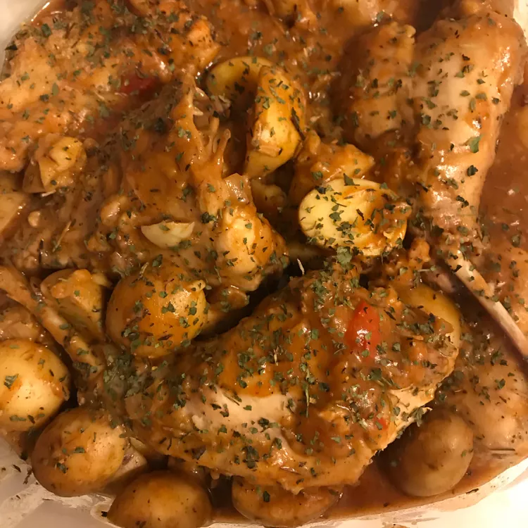

[ HOME ]
Stuffed Cabbage

Ingredients:
- 1 large head cabbage
- 1 pound lean ground beef
- 1 egg, beaten
- 1 onion, finely diced
- ¾ cup cooked white rice
- salt and pepper to taste
- 1 (10.75 ounce) can condensed tomato soup
Steps:
- Place cabbage head in freezer and freeze overnight. Remove from freezer, thaw and peel away leaves.
- Preheat oven to 350 degrees F (175 degrees C).
- Combine the beef, egg, onion, rice, salt and pepper. Mix together well. Take a small handful and form into a small roll or ball. Place into the center of a cabbage leaf. Fold the sides of the leaf over and roll the ball up into the leaf. Place seam side down in baking dish. Continue until all of the filling is used up.
- Mix together the soup with a 1/2 can water; pour over stuffed cabbage.
- Bake uncovered at 350 degrees F (175 degrees C) for 1 hour; baste often with the sauce.